Amagasaki, Hyogo: things to do, food and stays
Amagasaki · Hyogo
Amagasaki
Highlighted on the Hyogo map.
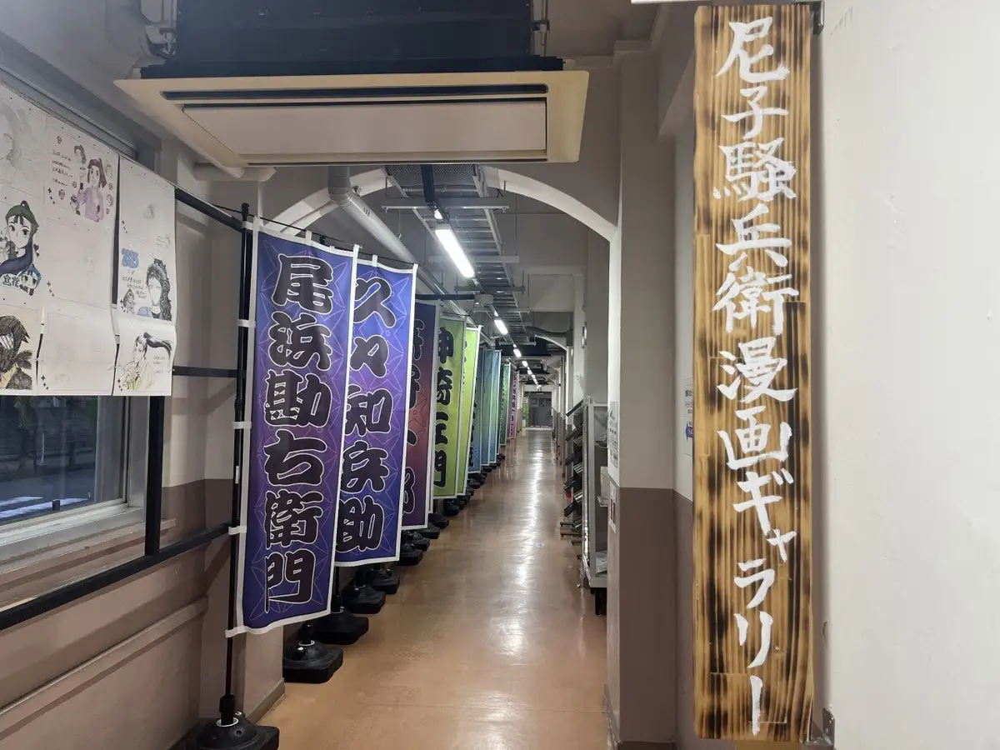
Stay
ホテルヴィスキオ尼崎
Hotel Visukio Amagasaki
都ホテル 尼崎
Miyako Hotel Amagasaki
ワイズホテル阪神尼崎駅前
Waizu Hotel Hanshin Amagasaki Ekimae
Hotel in Kandakitatori, Amagasaki with a large communal bath; 4-minute drive from !Koshienkyujomadetokkyude1 Station.
ホテルファーストステイ尼崎
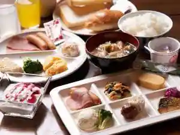
Hotel Fasutosutei Amagasaki
竹家荘旅館
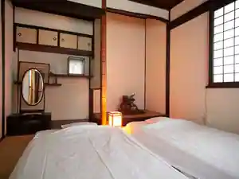
Take Ie So Ryokan
Ryokan inn in Miyauchi, Amagasaki; 1-minute walk from Hanshindeyashiki Station.
尼崎プラザホテル阪神尼崎
Amagasaki Plaza Hotel Hanshin Amagasaki
Hotel in Kandakitatori, Amagasaki with a large communal bath.
ラマダアンコールウィンダム尼崎
Ramadankoruindamu Amagasaki
Inn in Showaminamitori, Amagasaki; 3-minute walk from Heakusesubatsugunnahanshinamagasaki Station.
ホテルリブマックスBUDGET尼崎
Hotel Ribumakkusu BUDGET Amagasaki
東横ＩＮＮ阪神尼崎駅前
Toyoko INN Hanshin Amagasaki Ekimae
Inn in Misono, Amagasaki with breakfast available.
ステイホテル
Sutei Hotel
Dining
焼鳥 谷口
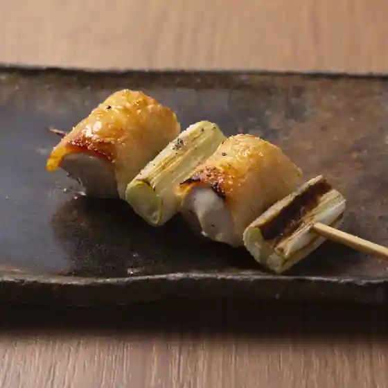
Yakitori Taniguchi
おぎたに
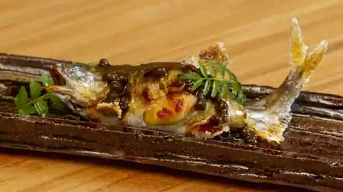
Ogitani
らーめん専門 和海
Ramen Senmon Wa Umi
本格さぬきうどん 穂乃香
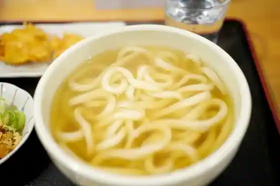
Honkaku Sanukiudon Ho No Kaori
ぶたのほし
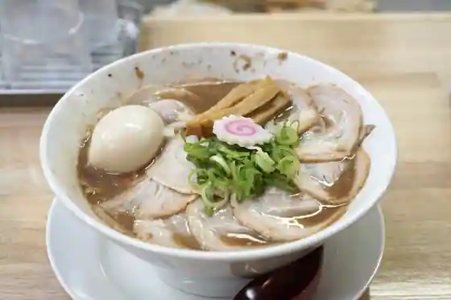
Butanohoshi
らーめん専門 和心 武庫之荘店
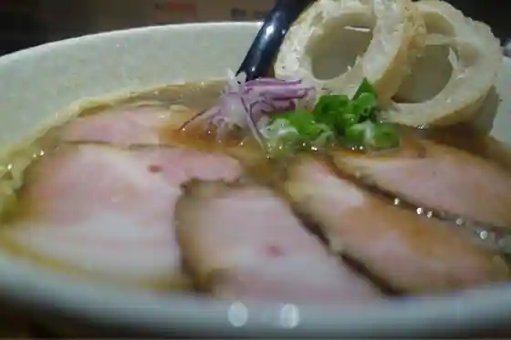
Ramen Senmon Wa Kokoro Mukonoso
うどん工房悠々
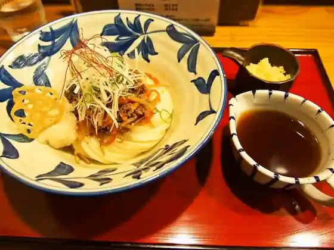
Udon Kobo Yuyu
韓国料理 釜山
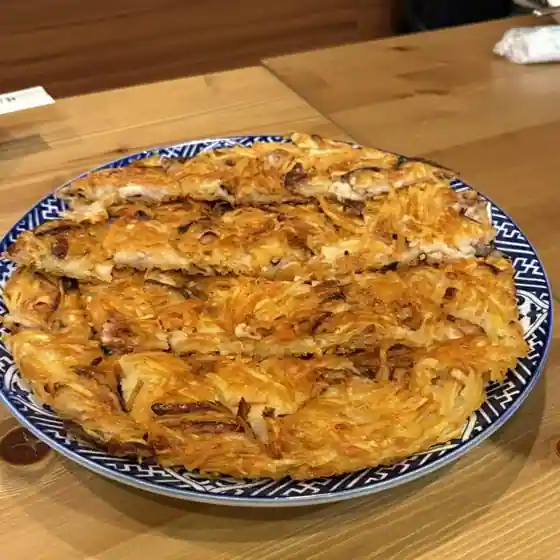
Kankokuryori Fuzan
アングル
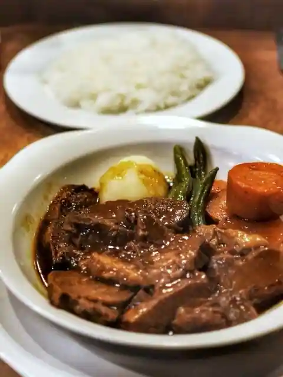
Anguru
魚楽唐唐
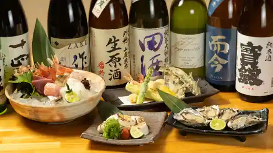
Sakana Raku To To
讃岐うどん はるしん
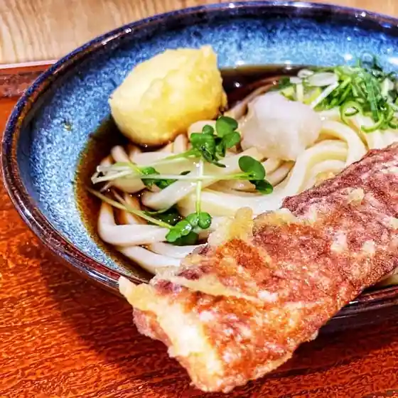
Sanuki Udon Harushin
新ちゃん
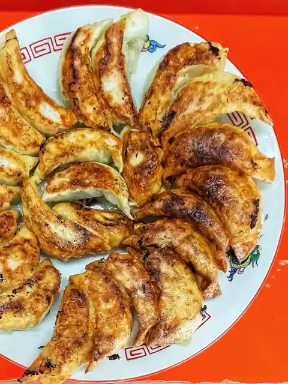
Arachi Yan
味楽園
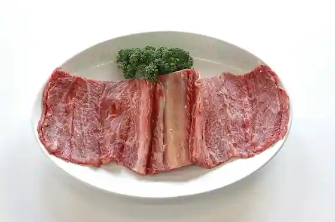
Aji Rakuen
手打ちうどん吉野
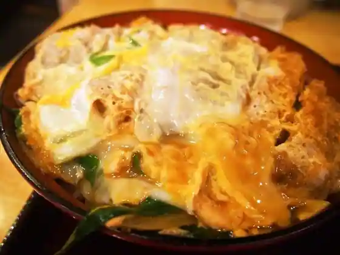
Teuchi Chiudon Yoshino
大連
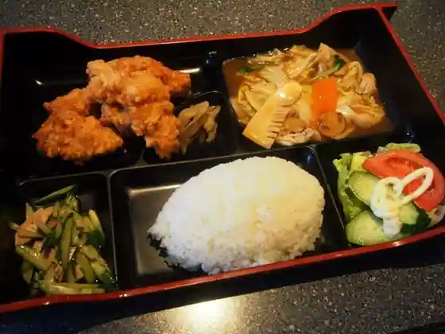
Dairen
魚処 おぎた
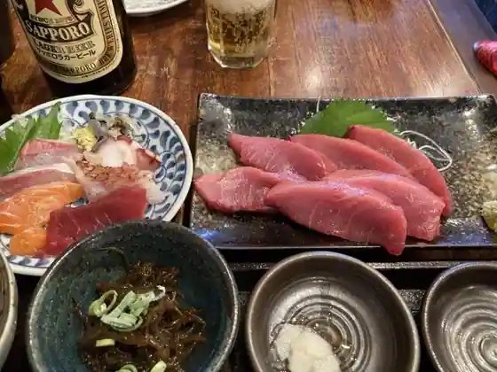
Sakana Tokoro Ogita
麺屋 Smile
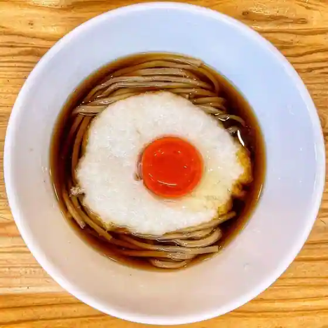
Men Ya Smile
Chic
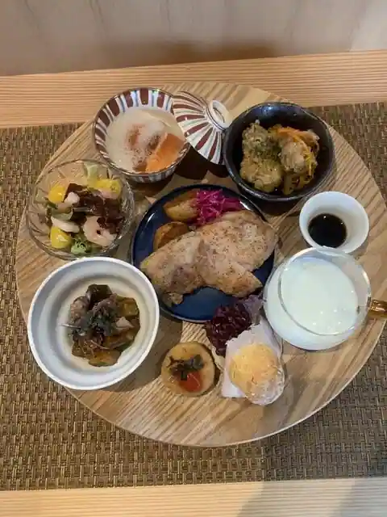
Chic
鮨 弥さか
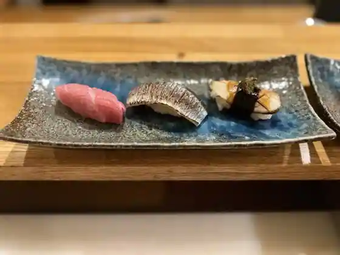
Sushi Ya Saka
ayairo
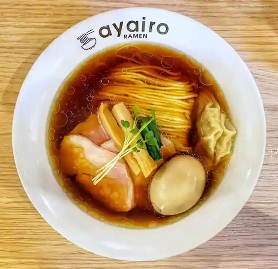
ayairo
てんてこ 武庫之荘店
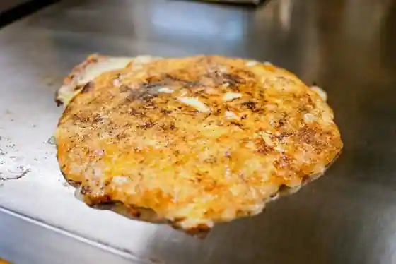
Tenteko Mukonoso
酒ト飯 ヤマダ
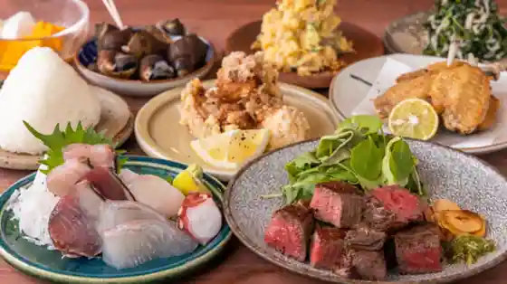
Sake To Meshi Yamada
中華料理アメちゃん
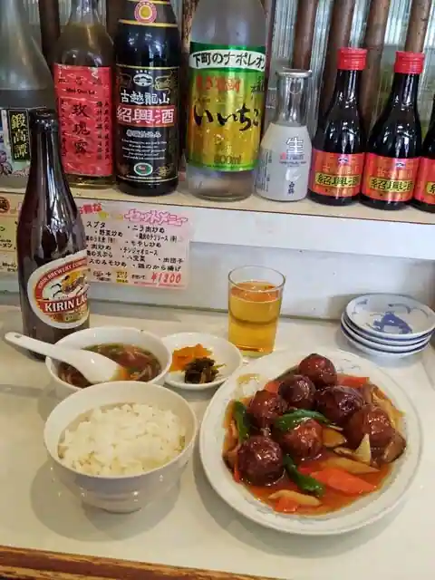
Chukaryori Ame Chan
焼肉 加茂川
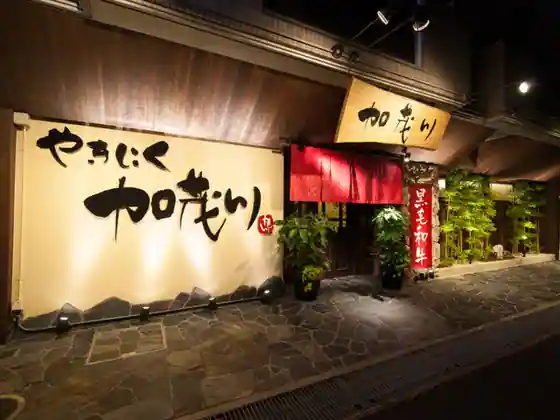
Yakiniku Kamogawa
Sights
Amako So Be Manga Gyararii